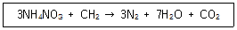
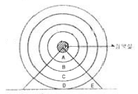
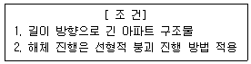
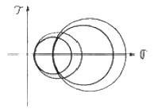
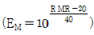
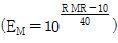
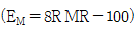
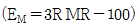
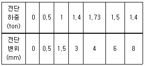
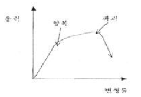

화약류관리산업기사 (2008-03-02 기출문제)
1과목: 일반화약학
1. 다음 중 산소평형값이 정(+)인 것은?
- 테트릴
- 피크르산
- 니트로글리세린
- TNT
(정답률: 알수없음)

2. 다음 중 니트로글리세린(Nitrogiycerine)의 화학식은?
- C3H5(NO3)3
- C7H5(NO2)3
- C7H5N5O8
- NH4NO3
(정답률: 알수없음)
3. 화약류의 용도에 따른 분류 중 테트릴(Tetryl)의 용도에 해당하는 것은?
- 전폭약
- 점화점폭약
- 점화약
- 발사약
(정답률: 알수없음)
4. 암모니아 젤라틴 폭약이 불완전폭발을 하였을 때 발생하는 가스 중 유독가스가 아닌 것은?
- N2O
- NO2
- NO
- N2
(정답률: 알수없음)
5. 폭약의 배합성분을 나타낸 것 중 틀린 것은?
- 산소공급제 - 질산암모늄, 과염소산암모늄
- 예감제 - TNT, 피크르산
- 감열소염제 - 식염, 염화칼륨
- 가연제 - DNN, 니트로글리세린
(정답률: 알수없음)
6. 한국산업규격(KS)에서 정한 산업폭약의 성능 기준에 의한 다이너마이트의 순폭도는 얼마 이상이어야 하며, 직경 32mm, 약량 112.5g인 다이너마이트는 최대 순폭거리가 16cm이면 순폭도는 얼마인가?
- KS규격 : 3, 순폭도 : 5
- KS규격 : 3, 순폭도 : 6
- KS규격 : 4, 순폭도 : 5
- KS규격 : 4, 순폭도 : 6
(정답률: 알수없음)
7. 함수폭약의 위력증대를 위하여 넣는 첨가제는?
- 알루미늄 가루
- 중공업자
- 밀가루
- 규조토
(정답률: 알수없음)
8. 디니트로나프탈렌(DNN)제조시 출발원료료 옳은 것은?
- C6H5OH
- C6H5CH3
- C6H6
- C10H8
(정답률: 알수없음)
9. 다음중 기폭약(primary explosives)으로 600kg/cm2의 강압으로도 사압(dead pressed) 현상이 일어나지 않는 것은?
- 아지화납(lead azide)
- 뇌홍(mercury fulminate)
- DDNP(diazodinitrophenol)
- 테트라센(tetracene)
(정답률: 알수없음)
10. 다음 중 산소공급제가 아닌 것은?
- KClO3
- NaNO3
- KNO3
- NH4Cl
(정답률: 알수없음)
11. 폭속이 큰 것부터 작은 순서로 차례대로 나열한 것은?
- TNT > 테트릴 > 헥소겐
- 헥소겐 > 테트릴 > TNT
- TNT > 헥소겐 > 테트릴
- 헥소겐 > TNT > 테트릴
(정답률: 알수없음)
12. 다음 중 한국산업규격(KS)에서 정한 화약류 성능 시험 방법이 아닌 것은?
- 마찰강도시험
- 도트리슈법
- 순폭시험
- 맹도시험
(정답률: 알수없음)
13. 다음 중 장기 저장하였을 때 자연분해하기 가장 쉬운 것은?
- 흑색화약
- 무연화약
- TNT
- 공업뇌관
(정답률: 알수없음)
14. 화약류 안정도시험을 한 결과 기준에 미달하는 경우의 처리방법은?
- 폐기처리
- 수선 후 사용
- 즉시 사용 처리
- 별도 보관 후 사용
(정답률: 알수없음)
15. 저압 전기뇌관의 사용전압은 어느 정도가 가장 적당한가?
- 0.5∼2.0V
- 2.0∼3.5V
- 2.8∼4.5V
- 10∼50V
(정답률: 알수없음)
16. 디니트로벤젠의 주용도를 옳게 설명한 것은?
- 기폭제로 사용한다
- 질산암모늄 폭약의 예강제로 사용한다.
- 작약으로 사용한다.
- 도화선 심약으로 사용한다.
(정답률: 알수없음)
17. 폭발시 염화수소 가스를 함유하는 결점이 있고 감도가 예민하므로 사용에 주의해야 할 것은?
- 흑색화약
- 분말다이너마이트
- 질산암모늄폭약
- 카알릿
(정답률: 알수없음)
18. 다음과 같은 폭발 반응이 일어나는 것은?

- 질산암모늄 폭약
- 질산암모늄 다이너마이트
- ANFO 폭약
- 암모니아 다이너마이트
(정답률: 알수없음)
19. 옥분 2kg을 완전 연소시킬 때 960L의 산소가 부족하여 산소공급제를 사용하고자 한다. 이 때 첨가할 산소공급제의 양은 약 몇 kg인가? (단, 산소공급제 1kg당 산소는 277L 발생한다.)
- 0.5
- 1.0
- 2.4
- 3.5
(정답률: 알수없음)
20. 다음 중 화공품에 속하는 것은 어느 것인가?
- 흑색화약
- 뇌홍
- 다이너마이트
- 도화선
(정답률: 알수없음)
2과목: 발파공학
21. 두 자유면을 가지는 암반에 평행한 여러 개의 발파공을 공경, 공간격, 천공길이를 동일하게 하여 동시에 발파하는 방법은?
- 제발발파
- M. S 발파
- 확저발파
- 조합발파
(정답률: 알수없음)
22. 다음 중 전기발파의 일반적인 작업 순서로 맞는 것은?
- 경계 - 장전 - 전색 - 대피 - 점화
- 장전 - 전색 - 대피 - 경계 - 점화
- 장전 - 전색 - 대피 - 점화 - 경계
- 장전 - 경계 - 대피 - 전색 - 점화
(정답률: 알수없음)
23. 다음 그림은 균질한 경암 내부에 구상의 장약실을 만들고 폭발시켰을 때 암석내부의 파괴상황을 나타낸 것이다. 암석이 대괴되는 부분은 어느 곳인가?

- A 부분
- B 부분
- C 부분
- D 부분
(정답률: 알수없음)
24. 발파진동과 지진동을 비교하여 설명한 것으로 맞는 것은?
- 주 진동수의 범위는 발파진동이 지진동보다 더 크다.
- 발파진동의 파형은 지진동보다 비교적 복잡하다.
- 지진동의 주파수는 100Hz 이상의 고주파이다.
- 발파진동은 상대적으로 진동시간이 길기 때문에 지진동에 비해 큰 에너지를 수반한다.
(정답률: 알수없음)
25. 다음 중 터널발파에서 주위 암반에 손상을 작게 하기 위해 외곽공의 장약작업에 이용되는 발파이론은?
- 노이만 효과
- 디커플링 효과
- 밀장전 효과
- 홉킨슨 효과
(정답률: 알수없음)
26. 계단높이 10m의 계단식 발파에 있어 직경 75mm의 발파공을 경사 3:1(경사각 약 75°)로 하향착공하여 에멀젼폭약으로 발파할 경우 최대 저항선 Bmax는? (단, 암서계수 c=0.4kg/m3, 공저장밀도 lb=4kg/m)
- 2.45m
- 2.72m
- 2.90m
- 3.26m
(정답률: 알수없음)
27. 다음 중 잔류약 발생의 원인이 아닌 것은?
- 천공장 또는 장약장에 비해 천공간격이 좁을 경우
- 장약장이 너무 길 경우
- 발파기의 용량부족
- 분말계 폭약의 비중 과대
(정답률: 알수없음)
28. 심빼기 번컷(Burn-cut)에서 무장약공경 10cm, 장약공경 3.3cm일 때 장약공의 단위길이당 장약량은? (단, Langefors식을 이용하고, 두장약공과 장약공의 중심간 거리는 150mm이다.)
- 2.61kg/m
- 1.21kg/m
- 0.76kg/m
- 0.28kg/m
(정답률: 알수없음)
29. 다음 중 발파소음의 감소대책에 대한 설명으로 틀린 것은?
- 완전한 전색이 이루어지도록 하여 공발을 방지한다.
- 기폭방법에서는 정기폭보다 역기폭을 실시한다.
- 주택가에서 비장약량을 줄이기 위해 붙이기 발파를 실시하고 발파부위에 덮개를 덮어 소리의 전파를 차단한다.
- 벤치의 높이를 줄이거나 천공지름을 작게하는 등의 방법을 통해 지발당 장약량을 감소시킨다.
(정답률: 알수없음)
30. 각선 길이 1.2m의 전기뇌관을 직렬결선하여 60m 거리에서 발파하고자 한다. 100V의 전등선을 사용하여 제발시킬 때 최대 제발가능수는? (단, 모선저항은 0.022Ω/m, 뇌관저항은 0.96Ω/계, 전류는 2.5A이다.
- 48개
- 38개
- 28개
- 18개
(정답률: 알수없음)
31. 단위중량 2.7ton/m3인 암반에 단일 자유면의 시험발파를 한 결과, 누두반경이 1m인 표준발파가 되었다고 하면, 이 때에 파쇄된 암석의 양은?
- 1.41ton
- 2.83ton
- 4.23ton
- 5.64
(정답률: 알수없음)
32. 인접공 발파에 의한 cut off 현상의 일반적인 발생원인으로 틀린 것은?
- 천공간격이 너무 협소할 때
- 기폭약포 위치가 너무 공구 가까이에 있을 때
- 암반에 예기치 못한 균열이 있을 때
- 갱내 심발발파에서 주변공의 장약장이 너무 짧을 때
(정답률: 알수없음)
33. 다음 중 제발 발파법에 비교하여 MS 발파법의 특징으로 틀린 것은?
- 폭음이 작다.
- 발파에 의한 진동이 작다.
- 분진의 발생량이 비교적 적다.
- 발파 후 파쇄암이 막장 근처에 높이 쌓인다.
(정답률: 알수없음)
34. 다음 중 수직천공과 비교하여 경사천공의 장점이 아닌 것은?
- 자유면 반대방향의 후면 파괴 감소
- 1 자유면에서 문제성 감소
- 저계단식 발파에서 근거리 비산
- 느슨한 암석의 자유면 보호
(정답률: 알수없음)
35. 일반적인 진동(정현진동)의 표시법 중 실효치를 나타내는 표기법은? (단, Ao는 진동의 최대값(peak level)을 나타낸다.)
- 0.5Ao
- 2Ao
- Ao/√2
- 2Ao/π
(정답률: 알수없음)
36. 다음의 조건으로 구조물해체를 하고자 한다. 발파해체공법의 종류 중 가장 적합한 것은?

- 전도공법(Felling)
- 단축붕괴공법(Telescoping)
- 점진붕괴공법(Progressive Collapse)
- 연속붕괴공법(Sequenced Racking)
(정답률: 알수없음)
37. 터널 발파시 대피장소의 조건으로 부적당한 것은?
- 발파지점을 눈으로 확인하고 쉽게 접근할 수 있는 곳
- 발파의 진동으로 천반이나 흑벽이 무너지지 않는 곳
- 발파로 인한 파쇄석이 날아오지 않는 곳
- 경계원으로부터 연락을 받을 수 있는 곳
(정답률: 알수없음)
38. 다음 중 폭약의 폭발에 의해 발생한 충격파는 암반 중을 3차원적으로 전파해 가지만 자유면에서 충격파는 반사되고 자유면측에서 폭원방향을 향해 연속적으로 암반의 파괴가 진행 된다는 파괴이론은?
- 압축파괴이론
- 인장파괴이론
- 전단파괴이론
- 분쇄이론
(정답률: 알수없음)
39. 대규모 석회석광산의 벤치발파에서 파쇄도(Fragmentation)에 영향을 미치는 요소가 아닌 것은?
- 비장약량
- 단위천공률
- 점화지연간격
- 전색제의 종류
(정답률: 알수없음)
40. 발파효과에 영향을 미치는 요소 중 조절 가능한 변수가 아닌 것은?
- 폭약의 종류
- 암반의 강도
- 천공간격
- 지발시차
(정답률: 알수없음)
3과목: 암석역학
41. 평면 변형율(Plane Strain) 해석에 관한 설명으로 틀린 것은?
- 3차원 해석을 보다 간단히 하기 위한 방법 중의 하나이다.
- 세 직교방향의 응력 중에서 적어도 하나는 0 인 것이 특징이다.
- 암반내에 굴착한 긴 수평 터널의 해석에 적합한 방법이다.
- 구속된 방향이 Z방향이면 σz=v(σx+σy)이다.
(정답률: 알수없음)
42. 다음 그림은 암석 시험 과정 중 시편에 가해지는 응력상태를 Mohr circle로 그려본 결과이다. 이것은 다음 중 무슨 시험에 의한 것인가?

- 일축인장시험
- 삼축압축시험
- 일축압축시험
- 훰시험
(정답률: 알수없음)
43. 암석의 일축압축강도 시험에 있어서 시험편의 모양이 다르면 같은 암석, 같은 단면적과 높이를 가진 시험편이라도 그 시험 결과가 다르다고 한다. 이러한 효과를 무엇이라고 하는가?
- 크기효과
- 분포효과
- 형상효과
- 시험효과
(정답률: 알수없음)
44. 암석의 안장강도가 10MPa이고, 단축압축강도가 200MPa인 경우 취성도 (Brittleness index)는 얼마인가?
- 0.⑤
- 5
- 10
- 20
(정답률: 알수없음)
45. 암석의 피로(Fatigue)에 대한 설명으로 맞는 것은?
- 반복하중을 가하면 발생한다.
- 크리프(Creep) 거동을 말한다.
- 피로 강도는 최대 강도의 20∼30% 수준이다.
- Maxwell 물체로 설명할 수 있다.
(정답률: 알수없음)
46. 암반의 RMR이 30인 경우 암반의 변형계수 (EM)를 구하는 식으로 알맞은 것은?




(정답률: 알수없음)
47. 터널설계와 관련하여 불연속면의 주향방향과 터널의 방향이 어떤 경우일 때 굴착작업의 안정성에 가장 유리한가?
- 주향방향이 터널방향과 수직이고, 경사방향으로 굴진할 때
- 주향방향이 터널방향과 수직이고, 경사의 반대방향으로 굴진할 때
- 주향방향이 터널방향과 평행하고, 경사각도가 낮을 때
- 주향방향이 터널방향과 평행하고, 경사각도가 높을 때
(정답률: 알수없음)
48. 다음 중 수압파쇄시험을 통하여 얻을 수 있는 자료가 아닌 것은?
- 암반내 최대수평응력
- 암반내 최소수평응력
- 암반의 압축강도
- 암반의 인장강도
(정답률: 알수없음)
49. 다음 중 암석의 삼축압축시험에서 봉압의 증가에 따라 발생하게 되는 현상이 아닌 것은?
- 파괴강도의 증가
- 취성거동에서 연성거동으로 전이
- 잔류강도의 증가
- 변형률연화현상의 발생
(정답률: 알수없음)
50. 다음 중 고전적 탄서이론에서 가정하는 탄성체의 성질에 대한 설명으로 틀린 것은?
- 물체에 응력이 작용하면 응력방향의 변형률은 작용응력에 반비례한다.
- 물체의 재질은 전 물체를 통하여 균질하게 분포·배열되어 있으며 재질의 탄성적 성질은 물체 내 모든 점에서 똑같다.
- 재질의 탄성적 성질은 모든 방향에서 똑같다.
- 변형을 일으키는 힘을 제거하면 물체의 크기와 모양은 완전히 원형의 상태로 돌아간다.
(정답률: 알수없음)
51. Room and Pillar 방식의 석회석 광산에서 발파음과 유사한 균열음이 들리다가 Pillar에서 급격한 파괴현상이 일어났다. 다음 중 이것과 가장 관련 깊은 것은?
- 크립(creep)
- 피로파괴(fatigue faiture)
- 파괴인성(fracture toughness)
- 암반돌출(rock burst)
(정답률: 알수없음)
52. 암반의 변형특성을 추정하기 위하여 현장에서 수행할 수 있는 시험법은 어떤 것인가?
- 정하중강도시험
- 투수시험
- 공내재하시험
- 굴곡강도시험
(정답률: 알수없음)
53. 어떤 암삭이 20MPa의 인장강도를 갖는다. 이 암석을 이용하여 15cm의 직경을 갖도록 원주형 공시체를 만든 경우 이 공시체를 가할 수 있는 최대 인장하중은?
- 251.2kN
- 302.3kN
- 353.4kN
- 404.5kN
(정답률: 알수없음)
54. 자연 절리에 대해 직접전단시험을 수행하여 다음과 같은 결과를 얻었다. 최대전단응력에서의 전단강성계수는 얼마인가? (단, 절리면의 단면적 250cm2, 절리면 상부의 무게는 1ton, 절리의 점착력은 0 이다.)

- 10.3cm3
- 12.3cm3
- 15.3cm3
- 17.3cm3
(정답률: 알수없음)
55. 다음 그림이 표현하고 있는 파괴거동은 어떤 것인가?

- 취성파괴
- 피로파괴
- 연성파괴
- 지연파괴
(정답률: 알수없음)
56. 인장강도의 종류에는 단축인장강도, 압열인장강도, 압열인장강도, 굴곡인장강도 등이 있는데 확률론적으로 볼 때 이들의 크기 순서를 바르게 나열한 것은?
- 단축인장강도 > 압열인장강도 > 굴곡인장강도
- 단축인장강도 > 굴곡인장강도 > 압열인장강도
- 단축인장강도 > 압열인장강도 > 굴곡인장강도
- 단축인장강도 > 굴곡인장강도 > 압열인장강도
(정답률: 알수없음)
57. 암반사면의 파괴형태 중 탁월한 불연속면의 경사방향이 사면의 경사방향과 거의 일치하며 사면의 경사가 불연속면의 경사보다 급한 경우 발생하는 것은?
- 원호파괴
- 평면파괴
- 쐐기파괴
- 전도파괴
(정답률: 알수없음)
58. 어떤 암석의 탄성파 속도를 측정한 결과 Vs=2650m/sec, Vp=4500m/sec였다. 이 암석의 동포아송비(Vd)는?
- 0.23
- 0.29
- 0.32
- 0.41
(정답률: 알수없음)
59. 1989년 RMR 분류기준으로부터 구한 RMR 값이 65점이었다. 이때 GSI(지질강도지수)는 얼마인가?
- 55
- 60
- 70
- 75
(정답률: 알수없음)
60. Griffith 파괴이론에 따른 파괴인성에 대한 설명으로 틀린 것은?
- 균열을 팽창시키는 데 필요한 응력은 파괴인성이 높을수록 낮다.
- 균열을 팽창시키는 데 필요한 응력은 균열의 길이가 길수록 낮다.
- 파괴인성은 물질 고유의 균열 성장에 대한 저항도를 나타내는 물질상수이다.
- 파괴인성의 값이 높을수록 균열의 성장은 어렵다.
(정답률: 알수없음)
4과목: 화약류 안전관리 관계 법규
61. 화약류 1급 저장소에 폭약 4톤을 저장할 때의 제1종 보안 물건과의 보안거리의 기준은?
- 470m 이상
- 440m 이상
- 260m 이상
- 170m 이상
(정답률: 알수없음)
62. 화약류운반용 축전지차의 구조 기준 중 축전지의 사용전압은?
- 12볼트 이하
- 24볼트 이하
- 50볼트 이하
- 100볼트 이하
(정답률: 알수없음)
63. 저장중인 다이나마이트이 등의 약포에서 니트로글리세린이 스며나와 마루바닥이 오염된 경우 니트로글리세린을 분해시키는데 사용되는 것으로 거리가 먼 것은? (단, 혼합액체로 만드는데 필요하지 않는 것)
- 식물유제
- 알콜
- 가성소다
- 물
(정답률: 알수없음)
64. 화약류 취급소의 정체량 중 맞는 것은? (단, 1일 사용예정량임)
- 공업용뇌관 - 5000개
- 도폭선 - 10km
- 화약 - 600kg
- 폭약(초유폭약 제외) -300kg
(정답률: 알수없음)
65. 화약류의 사용허가를 받지 아니하고 발파 또는 연소시킬 경우의 처벌내용은? (단, 법적 예외사항은 제외)
- 5년 이하의 징역 또는 1천만원 이하의 벌금형
- 3년 이하의 징역 또는 700만원 이하의 벌금형
- 2년 이하의 징역 또는 500만원 이하의 벌금형
- 300만원 이하의 과태료
(정답률: 알수없음)
66. 간이저장소의 위치·구조 및 설비의 기준에 대한 설명으로 맞는 것은?
- 벽과 천정(2층 이상의 건물인 경우에는 그 층의 바닥을 포함한다)의 두께는 10cm 이상의 철근콘크리트 또는 20cm 이상의 보강콘크리트블록조로 할 것
- 저장소의 안쪽벽과 바깥쪽벽과의 공간에 습기가 차지 않도록 배수설비를 할 것
- 출입문은 두께 2mm 이상의 철판을 사용한 철제로 할 것
- 수위계와 자동흡수장치를 설치할 것
(정답률: 알수없음)
67. 안정도시험의 결과보고에 포함되지 않아도 되는 사항은?
- 시험실시 연월일
- 시험성적
- 시험을 실시한 화약류의 제조일
- 시험장소
(정답률: 알수없음)
68. 화약류 폐기시 폭발 또는 연소처리할 때 폐기 장소 주위에 높이 몇 m 이상의 흙둑을 설치하여야 하는가? (법적 기준임)
- 2m
- 3m
- 4m
- 5m
(정답률: 알수없음)
69. 피보호건물로부터 독립하여 피뢰침 및 가공지선을 설치하는 경우 피뢰침 및 가공지선의 각 부분은 피보호건물로부터 몇 m 이상의 거리를 두어야 하는가? (법적 기준임)
- 4.5m
- 1.5m
- 3.5m
- 2.5m
(정답률: 알수없음)
70. 다음 중 화약류 운반시 운반표지를 하지 않아도 되는 수량 기준으로 틀린 것은?
- 100개 이하의 공업용뇌관
- 5kg 이하의 폭약
- 1000개 이하의 미진동파쇄기
- 1000m 이하의 도폭선
(정답률: 알수없음)
71. 화약류관리보안책임자 면허에 관한 설명으로 옳은 것은?
- 화약류관리보안책임자 면허는 조소지 관할 경찰서장이 발급한다.
- 면허신청시 첨부하는 신체검사서는 종합병원에서 발행한 것에 한한다.
- 화약류관리보안책임자면허의 갱신을 받고다 하는 사람은 갱신기간 만료일까지 면허갱신을 신청해야 한다.
- 면허갱신의 연기를 받은 사람은 그 사유가 없어진 날부터 1개월 이내에 면허갱신을 신청해야 한다.
(정답률: 알수없음)
72. 다음 중 화약류 저장소의 최대저장량으로 틀린 것은?
- 1급 저장소 : 미진동 파쇄기 200만개
- 2급 저장소 : 미진동 파쇄기 100만개
- 3급 저장소 : 미진동 파쇄기 1만개
- 간이 저장소 : 미진동 파쇄기 300개
(정답률: 알수없음)
73. 동일 차량에 함께 실을 수 있는 화약류를 나타낸 것으로 틀린 것은?
- 폭약 - 도폭선
- 화약 - 신관(포경용 제외)
- 도폭선 - 공업용뇌관
- 실탄·공포탄 - 전기뇌관
(정답률: 알수없음)
74. 다음 중 화약과 비슷한 추진적 폭발에 사용될 수 있는 것으로서 대통령령이 정하느 것에 포함되지 않는 것은?
- 과염소산염을 주로 한 화약
- 다아조디니트로페놀을 주로 한 화약
- 크롬산납을 주로 한 화약
- 황산알루미늄을 주로 한 화약
(정답률: 알수없음)
75. 초유폭발에 의한 발파의 기술상의 기준으로 틀린 것은?
- 기폭량에 적합한 전폭약을 같이 사용할 것
- 가연성 가스가 0.5%이상이 되는 장소에서는 발파하지 말 것
- 금이 가고 틈이 벌어지거나 공동이 있는 곳에 천공된 구멍에는 장약을 하지 말 것
- 장전 후에는 가급적 신속히 점화할 것
(정답률: 알수없음)
76. 꽃불류 사용의 기술상의 기준으로 적당한 것은?
- 쏘아 올리는 꽃불류는 반드시 30m 이상의 높이에서 퍼지도록 해야 한다.
- 꽃불류를 발사통안에 넣을 때는 끈 등을 사용하여 서서히 넣는다.
- 꽃불류가 불발이 되었을 때는 발사통에 많은 양의 물을 넣고 15분 이상 경과한 후에 접근하여 처리한다.
- 풍속이 초당 5미터 이상일 때에는 꽃불류의 사용을 중지해야 한다.
(정답률: 알수없음)
77. 화약류 사용자는 매월의 사용상황을 관할 경찰서장을 거쳐 허가관청에 언제까지 보고하여야 하는가?
- 다음달 10일까지
- 다음달 7일까지
- 다음달 5일까지
- 다음달 말일까지
(정답률: 알수없음)
78. 소지·사용 등에 있어서 법의 적용이 배제되는 화공품의 수량으로 행정자치부령이 정하는 수량(기준)이 맞는 것은?
- 시동약 : 무제한
- 전기뇌관 : 100개이하
- 타장총의 공포탄 : 1만개 이하
- 실탄·공포탄(타정총의 공포탄 제외) : 500개이하
(정답률: 알수없음)
79. 화약류 저장소에 흙둑을 쌓은 경우 흙둑의 경사의 기준으로 맞는 것은?
- 75도 이하
- 65도 이하
- 55도 이하
- 45도 이하
(정답률: 알수없음)
80. 다음 중 폭약 1톤에 대한 환산 수량으로 틀린 것은?
- 공포탄 200만개
- 총용뇌관 250만개
- 신호뇌관 20만개
- 미진동파쇄기 5만개
(정답률: 알수없음)